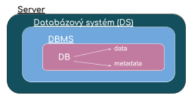
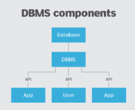

Relacni-databazove-systemy
!!! Rozlišovat pojem databázový systém a databáze!!!
Otázky
DBMS definice --> k čemu je
Server --> kde
přístup do DBMS --> Jak
ochrana, multitasking --> co to je
integrita --> 3 druhy integrit
přístup k datům --> Jak
architektura --> Jaká
Popis
soubor dat, která jsou uložená na serveru
Databázový systém se skládá z úložiště dat - databáze a obslužného programu - DBMS
do databázového systému se může připojit několik uživatélů ve stejný moment
přístup do databázového systému je možný pouze přes Database Management System --> DBMS software.
v databázovém systému jsou data izolována od aplikací a uživatelských systémů
Terminologie
DBMS
programová nástavba na správu databázového systému
více uživatelský přístup --> multitasking je zajištěný transakcí
rozhraní, které zapouzdřuje data v DB, data jsou přístupná pouze přes toto rozhraní
zajišťuje integritu dat --> entitní, referenční, doménovou
řeší ochranu data před zneužitím --> oprávnění, role...
umožňuje manipulaci s daty pomocí jazyka SQL
 
Příklady DBMS
Server --> Client
MySQL --> Workbench
MSSQL --> Management Studio
Oracle --> Oracle Developer
Databáze
organizované úložiště dat
musí splňovat integrační omezení a je normalizovaná
data = informace bez kontextu
metadata = data o datech
Typy DB
relační - pevně daná struktura. Neměla by obsahovat redudantní data --> Oracle, MSSQL, PostgreSQL
nerelační - obsahuje redudantní data. Využívají je sociální sítě (nevyužívají tabulkové schéma) --> MongoDB, MariaDB, NoSQL
objektové - informace jsou reprezentovány jako objekty
Sum-up
Databázový systém--> soubor dat uložených na serveru:
databáze
DBMS
DBMS - systém pro správu db
integrita dat
bezpečnost dat
multitasking
manipulace s daty
Databáze - organizované úložiště dat
data - informace bez kontextu
metadata - data o datech
Schéma